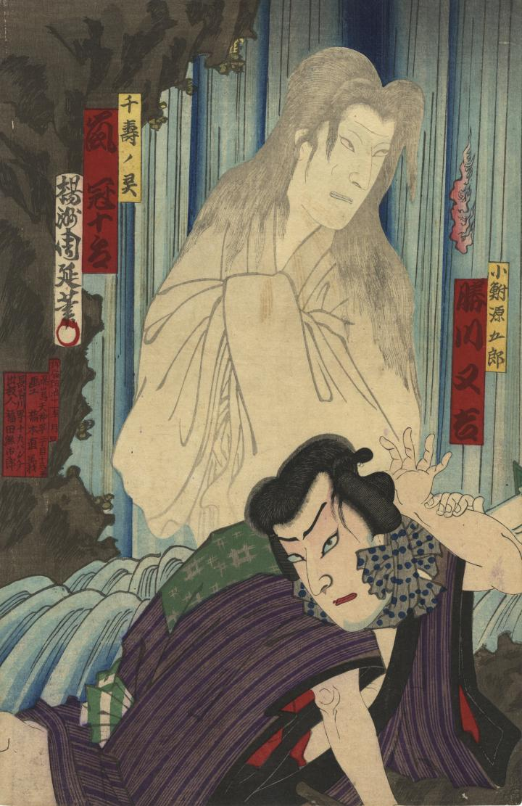

千寿の亡霊が現われている。
著作者：楊洲周延／出典：親書誌：U426_nichibunken_0393：中嶋座新狂言蒼天麗浪宇和島養老[瀧]之塲；ナカジマザ シン キョウゲン ソラ モ ウララカ ナミ ノ ウワジマ ヨウロウ ノ タキ ノ バ／日付：2015／資源識別子：U426_nichibunken_0393_0001_0000
Copyright (c)2010- International Research Center for Japanese Studies, Kyoto, Japan. All rights reserved.